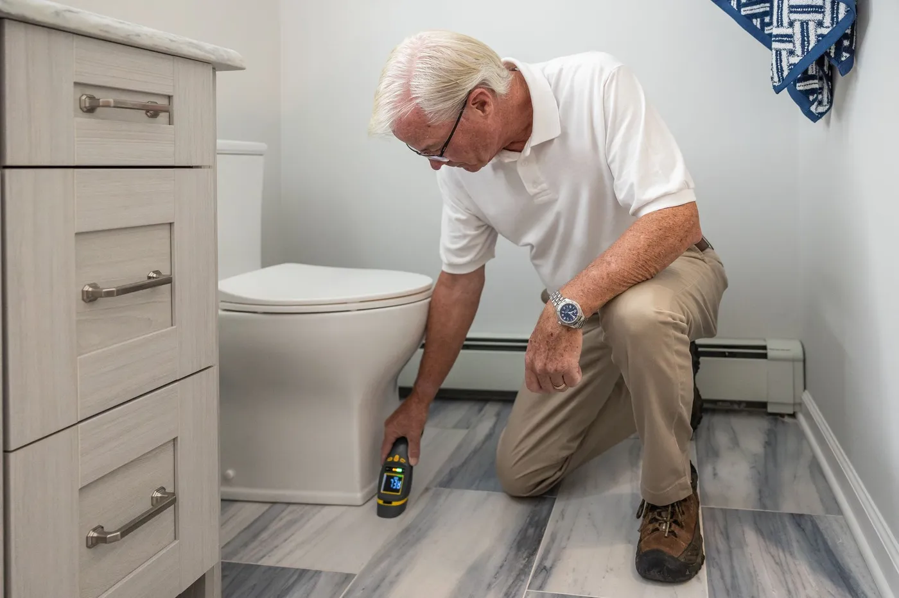

What Does Radon System Repair Involve?
We start by checking the manometer gauge and listening for the fan at the exterior unit to confirm whether it’s actually running. If the fan has failed, we replace it with a properly sized unit matched to the existing pipe diameter and suction point rather than swapping in whatever’s on the truck. We also check every accessible pipe joint and seal for cracking or separation, since PVC glue joints can loosen slightly over years of vibration from the fan itself, and finish with a retest to confirm the repaired system is back under the 4 pCi/L action level.
When Do You Need Radon System Repair?
- The manometer gauge on the pipe reads level instead of showing a pressure difference.
- You can no longer hear or feel the fan running at the exterior unit.
- You bought a home with an existing system and have no record of when it was last serviced or tested.
- A recent retest came back above 4 pCi/L even though a system is already installed.
Why Do Radon Fans Fail?
Radon fans run continuously, 24 hours a day, every day of the year, which means they rack up far more operating hours than almost any other motor in a house. Most fans are rated for 8 to 12 years of continuous duty, and Jacksonville’s heat and humidity in an attic installation can shorten that somewhat compared to a cooler, drier climate.
Bearing wear is the most common failure point, followed by moisture getting into the motor housing on units mounted outdoors without adequate weatherproofing.

What Affects the Cost of Radon System Repair in Jacksonville?
A straightforward fan replacement on an accessible system runs $350 to $650 including the retest, while a fan mounted in a tight attic space or one that requires re-routing a cracked pipe section can run higher. Systems that need a second suction point added because the original single point is no longer keeping levels down are priced closer to a partial new installation, generally $600 to $1,200.
Repair vs. Full System Replacement: Which Do You Need?
A repair makes sense when the existing suction point and pipe layout are sound and the problem is isolated to the fan or a sealing issue, which covers the large majority of service calls we get. A full replacement is worth considering only when the original system was poorly designed from the start, for example a suction point placed in the wrong spot for the slab’s layout, since no amount of fan swapping fixes a system that was never positioned correctly.
Frequently Asked Questions
How do I know my radon fan has failed?
Most systems have a small U-tube manometer gauge mounted on the pipe, and the liquid inside should sit noticeably off-level when the fan is running. If the gauge reads level, or if you can no longer hear or feel the fan running with your hand near the exterior unit, the fan has likely stopped working.
How often does a radon system need maintenance in Jacksonville?
A well-installed system runs with very little attention beyond checking the manometer gauge every few months, but we recommend a professional retest every two years to confirm the system is still holding levels below 4 pCi/L, since fans do wear out over 8 to 12 years of continuous operation.
I bought a home with an existing radon system. Do I need to have it checked?
Yes, especially if the previous owner couldn’t tell you when the fan was installed or the last time it was tested. A quick inspection and retest confirms the system is actually working rather than just present, which is common enough on older resale homes that it’s worth the one-time check.